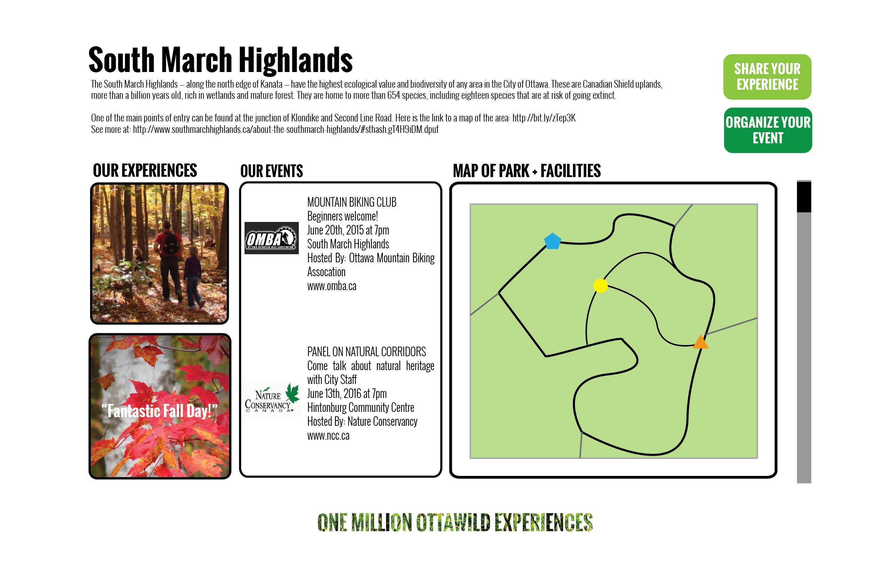
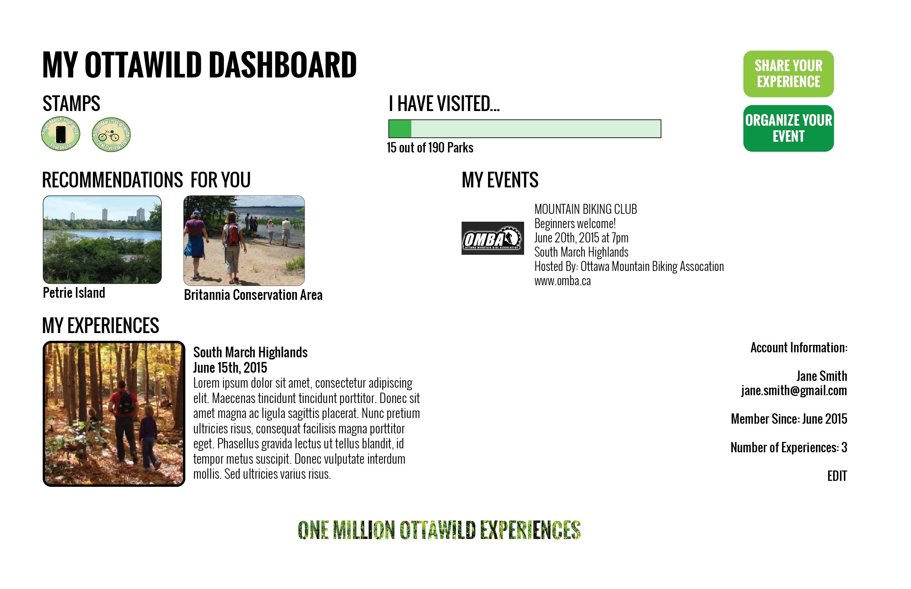

Ottawild
About
The purpose of Ottawild is to increase awareness of the City’s natural areas among residents and visitors to make nature a part of Ottawa’s identity and positive reputation.
Partners
• City Councillors
• Ottawa 2017
• Parks, Recreation & Cultural Services Department
• Ottawa Public Health
• Economic Development and Innovation
• Forestry Services, Public Works Department
• Neighbourhood Connection Office
• Transportation Planning, Planning and Growth Management
• Cleaning the Capital
• Rural Affairs Office
• Grants Programs
Collaborators
• Public partners, federal agencies and departments
• Tourism Sector
• Canadian Museum of Nature
• Universities and Colleges Environmental Programs
• School Boards
• Canadian Organizations
• Outdoor Enthusiasts
• Community organizations
Contact
Ottawild
100 Anywhere Street East
Ottawa, ON, K1P 1J1
Email: ottawild@mail.ca
Phone: (000)000-0000
Fax: (000)000-0000

